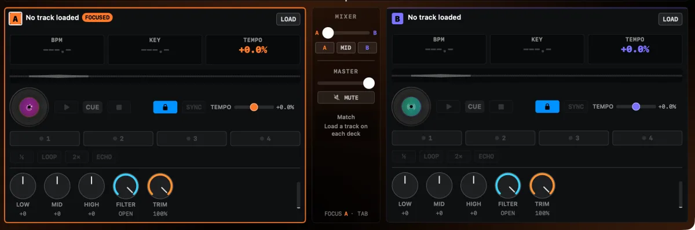
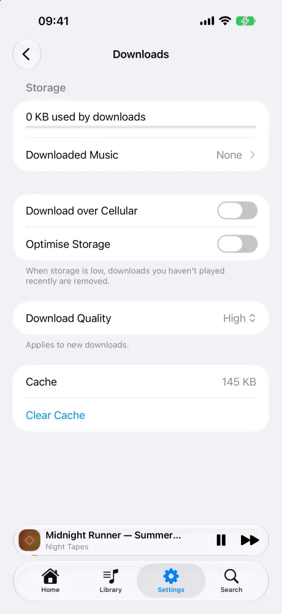
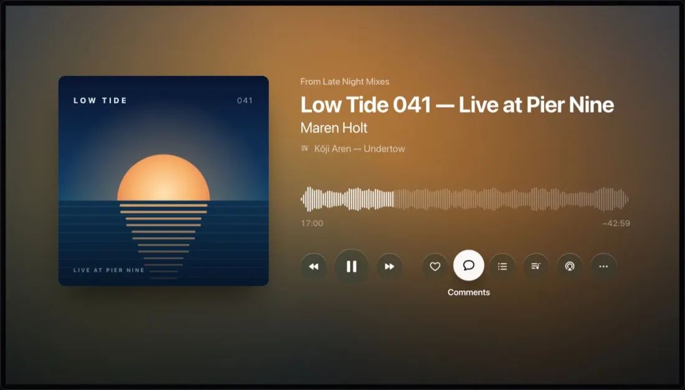
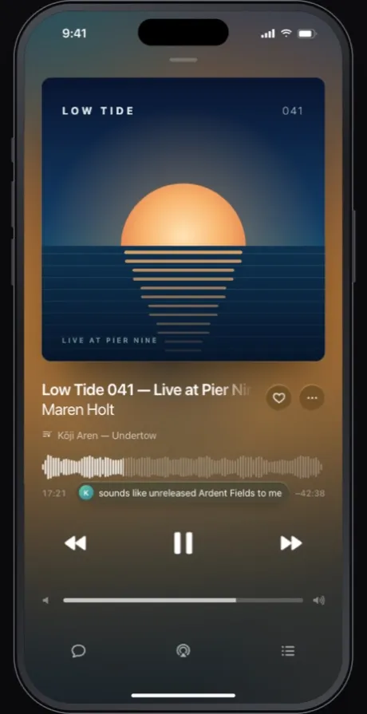

01 / MAKE IT YOUR MIXTwo decks.
Two decks.
Your next transition.
A crossfader, three-band EQ, filters, hot cues, loops and jog wheels. Auto Mix beat-matches the next track and brings it in on time.

Listen, mix, take it along
Your SoundCloud library.
A little more at home.
The waveform. The comments. The track inside the mix. All on the Apple devices you already use.
Ask about TestFlight Free. No ads. Coming to the App Store.
MAREN HOLT
Live at Pier Nine
IN THE MIX
Lanterns (Maren Holt Edit)Pale Harbour
A feel for Now Playing. Scrub the waveform or pick a track.
FICTIONAL MIX · REAL APP DESIGNA closer listen
Your likes, playlists and the people you follow are already there. Nothing to import. Just sign in and press play.
A crossfader, three-band EQ, filters, hot cues, loops and jog wheels. Auto Mix beat-matches the next track and brings it in on time.

Download tracks, playlists or your likes. Playlists stay in sync. Optimise Storage makes room when you need it. Encrypted on disk.

SAVED FOROn-device tempo, key and genre. Tracklists follow DJ mixes, and Identify uses ShazamKit to name a track. Save the finds in Library → Setlists.
Move playback between iPhone, Mac and Apple TV. Control the TV from your phone or Mac. Link several devices to one TV.
Polyphony plays in time across nearby devices. Keep play, pause, skip and scrubbing close with Apple Watch controls.
From your wrist to your living room
Sign in on your iPhone. Link your Mac and Apple TV over your local network. Your music comes along.


A private listening room
Sounding has no servers, no accounts of its own, no analytics and no advertising.
Your sign-in stays on your devices. Sync goes through your own iCloud. Nothing of yours passes through a server of ours, because there isn’t one.
Read the privacy policyYes. Sign in with your SoundCloud account to find your likes, playlists, stream and followed artists. Sounding has no separate account to create.
Sounding is free. No in-app purchases, no subscriptions and no ads.
Download tracks, playlists or your likes. Downloaded playlists stay in sync as they change, and Optimise Storage can remove downloads you haven’t played in a while.
Sign in on your iPhone, then link your Mac or Apple TV over your local network. Your iPhone or Mac can control playback on the TV, and playback can move between devices at the same position.
Sounding is coming to the App Store. TestFlight is the first step. Email to ask about testing. There isn’t a public TestFlight link here yet.
Open TestFlight, choose Sounding and tap Send Beta Feedback. Include your device, what you were doing and what happened. You can also email sounding@alex.forbes.red.
Your next listen starts here
Coming to the App Store.iPhone, iPad, Apple Watch, Apple TV and Mac.
Ask about TestFlight Free. Independent. Made for listening.
was front left at Pier Nine, this moment was unreal